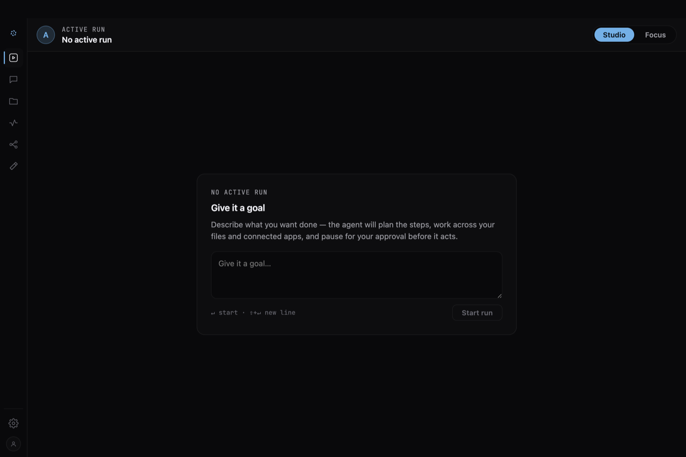

Copilot lives on your machine, moves through your files and tools, and quietly takes care of the work. You can check in, change direction, or leave it running while you focus on what matters. Consider your day handled.

The real app, today — not a mockup. Give it a goal; it plans, works across your files and the apps you connect, and pauses for your approval. Local, on your machine.
The gap
The breakthroughs of the last two years are extraordinary — and nearly every one is pointed at a repo. The people who run treasury, community, governance and growth got a chat box and a copy button. 0xCopilot is the agent for that work: it opens your sheets, your multisig, your threads and your Discord, and does the whole multi-step job end to end.
Built for the repo
Real agents, real multi-step work — pointed almost entirely at source code.
Built for the rest of the org
The wedge
0xCopilot makes every run a durable, ordered log of typed events — not a black box that emits a summary. Watch it happen live, rewind to any point, and step in the moment it matters.
Every step is a typed event, streamed live — plans, tool calls, results — not a summary at the end.
GET /v1/agent/runs/:id/streamEvents persist with a monotonic sequence number per run. Replay from any point, or reconnect and resume where you dropped.
?after_sequence=NAnything that touches the real world pauses and waits for your go-ahead. Approve it, redirect it, or stop the run mid-flight.
run.waiting_for_permissionNot a chatbot
Chat is one surface, not the whole product. The work lands on real places you can open, filter and act on — and the agent works the same surfaces you do. It's a workspace, not a prompt box.
Yours
0xCopilot runs locally. Bring your own API key — it talks to OpenAI, Anthropic or Google, and you pay your provider directly. No seat license, no subscription tier, no middleman between you and the model you chose.
vault you run.Get it
0xCopilot ships as a desktop app for macOS and Windows. Install the copilot CLI with npm or Bun; the first run stages a self-contained local runtime and opens the app. The runtime, the stores and the event log all stay on your machine.
# Node 20+ or Bun
$ npm install -g @0x-copilot/cli
# …then launch the app
$ copilotFull install notes — first-run staging, commands, platforms — are on the Install page. Prefer to self-host the web stack instead? It still runs anywhere Docker does — read the source.
The token
0xCopilot has launched $CPILOT on Virtuals Protocol, on Robinhood Chain. Nearly half the fixed supply seeded the liquidity pool at launch, just under a third funds the team and contributors, and a quarter is protocol-run capital formation — released only as the market verifies progress.
+ 0.25% veVIRTUAL airdrop · fixed 1,000,000,000 $CPILOT supply
45.56% of a fixed 1B supply, in the pool at launch — the tradable float everyone buys from.
29.19% for the people who ship it — mostly locked and vesting, including a disclosed 2% launch buy.
25%, protocol-run and tied to valuation. No discretionary insider selling.
Answers
Contact
Questions, ideas, or want to follow along? Find us here.